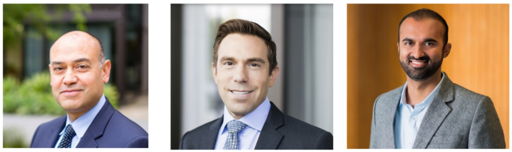

CDKL5 Deficiency Disorder (CDD) is a rare genetic condition affecting about 1 in 40,000 children, leading to severe developmental delays and seizures due to mutations in the CDKL5 gene. For families living with CDD, hope has often arrived with uncertainty.
Over the years, many parents have watched promising research programs appear, stall, or quietly disappear—usually for reasons that had little to do with science and everything to do with business priorities of the research institutes and medical offices. That history is precisely why this CDKL5 Gene Therapy effort by the Child's Cure Genetic Research Foundation exists, partnering with the UCSF clinical team to advance a program that builds on established science, brings gene therapy from the lab to the clinic, and communicates every step with careful, responsible, and transparent intent.
The Clinical Dinner
On January 15, 2026, families gathered virtually and in person for a UCSF Clinical Dinner, where a "working draft" of the planned Phase I clinical trial was presented. The event featured key members of the UCSF clinical team:
Dr. Nalin Gupta
Chief of Pediatric Neurological Surgery at UCSF and pioneer in delivering therapies directly to the brain. Principal Investigator leading numerous clinical trials for rare pediatric brain diseases.
View Profile ↗Dr. Adam Numis
Pediatric epilepsy specialist leading seizure monitoring and neurologic assessments in the trial. Expert in epilepsy care and outcome measures for children with CDKL5.
View Profile ↗Dr. Kazim Narsinh
Neuroradiologist interpreting imaging for safety and vector distribution. Expert in pediatric brain imaging and safety assessments for clinical trials.
View Profile ↗Jainu Jogani, co-founder of Child's Cure Genetic Research Foundation, provided an overview of the CDKL5 gene therapy project, its current status, and next steps. Industry partners from Charles River Laboratories, iXCell Biotechnologies, UCSF Catalyst, and uBrigene also attended, highlighting the collaborative effort behind this initiative.
The purpose of the meeting was to explain what is being built, why certain decisions are being made, and what participation in a first-in-human gene therapy trial would truly involve.
📸 Moments from the Event
Photos from the January 15, 2026 Clinical Dinner at UCSF
The Science: Why Gene Therapy?
CDKL5 gene therapy aims to replace the dysfunctional gene with a healthy copy, addressing the root cause of CDD. The CDKL5 protein supports dendrite branching and synapse formation, and by delivering a functional version via an Adeno-Associated Virus serotype 9 (AAV9) vector, the therapy targets widespread brain networks affected by the disorder.
This gene therapy is not fundamentally different from previous CDKL5 programs. There are only a few proven ways to deliver genes safely into the brain today, and this program uses AAV9, the same vector class used in many prior efforts. AAV9 acts like a tiny delivery boat, carrying a healthy CDKL5 gene to brain cells. Once it reaches the neurons, this gene starts producing a protein that helps grow brain connections and keeps signals steady.
What is different is execution. Previous programs did not reach clinical trials, often because of shifting corporate priorities or financial models that did not favor rare diseases. This parent-led effort exists to finish the work—to take what science already knows how to do and carry it across the final, difficult threshold into human trials.
Key Milestones Achieved:
- Successful vector design and development for CDKL5 protein expression
- Proof-of-concept efficacy studies in CDKL5 mouse models and iPSC cell lines showing functional restoration
- Completion of pre-IND discussions with the FDA
- Finalization of the clinical protocol synopsis outlining the trial's structure and endpoints
- Development of the groundbreaking CDKL5 pig model—the first of its kind
Why Gene Therapy Over Stem Cells?
The clinical team explained that stem cell approaches work best when targeting very specific brain regions. In disorders like CDD, where seizures arise from complex networks and the impact is widespread, stem cell deployment across all brain regions is far more complex. They also bring added challenges: immune reaction to stem cells, uncertainty about how they integrate, and limited evidence of benefit in genetic epilepsies. For CDKL5, gene replacement remains the most feasible way to address the disorder's root cause.
Understanding the Trial Phases
The ideal is to execute this program in 3 phases:
Phase 1 – Safety First
A small, carefully selected group is treated to ensure the therapy can be delivered safely. While not designed to prove success, any strong signal—like a clear reduction in seizures—would be highly meaningful.
Phase 2 – Evidence of Impact
Builds on Phase 1 by using early signals and biomarkers to refine dosing and design, helping show whether the therapy is consistently working and how best to measure its effects.
Phase 3 – Proof at Scale
A larger, longer "pivotal" study designed to definitively prove effectiveness on stopping seizures and safety over time, providing the evidence needed for potential regulatory approval.
Costs & Funding: The "Functional House" Philosophy
A pivotal part of the conversation centered on cost. Families have heard that gene therapy programs often cost $20–30 million. Why, then, is this program raising $3.5 million?
This fundraising goal is intended to support Phase 1 and Phase 2 with a small number of participants. It does not attempt to fund every phase in advance. The UCSF team explained that much of the cost in gene therapy trials comes from what is included per patient: anesthesia, imaging, lab monitoring, inpatient care, long-term follow-up, and the specialized personnel required for a high-risk study.
Another rare disease program, FOXG1, is raising around $22 million because it plans to fund all phases at once, including Phase 3. The physicians offered an analogy that perfectly captured the philosophy:
"You can buy an expensive house with a porch and a view, or you can buy a functional home that meets your needs. This program is building a functional house: a trial that ensures safety and meaningful outcomes, without adding every possible test that might inflate costs and slow progress."
Core endpoints focus on seizure reduction as the primary measure, and biomarkers including phosphorylated EB2—a bonafide downstream target of CDKL5. If CDKL5 protein is present and working, EB2 will show up in CSF, making this an important biomarker confirming if CDKL5 is expressed and working properly. Blood and spinal fluid can be stored for later analysis rather than running every expensive assay immediately.
The Inpatient Experience
The CDKL5 Gene Therapy process would begin with pre-infusion assessments and pre-medication. Here's what families can expect:
Pre-Infusion (Day -1 to 0)
Assessments of vital signs, blood draws, weight checks, and pre-medication like steroids to mitigate immune responses to the viral vector.
Day of Administration (Day 0)
The child is asleep under anesthesia in an interventional suite. The gene therapy is delivered once via the intracisterna magna route, guided by imaging. Continuous monitoring follows for any reactions.
Post-Infusion (Day 1+)
Safety surveillance covers indicators like liver enzymes and immune markers, alongside seizure management in a family-centered setting where parents can stay bedside.
Discharge & Follow-Up
Discharge occurs once the child is clinically stable, with clear medication instructions (e.g., tapering steroids), emergency protocols, and scheduled post-discharge follow-ups. Long-term monitoring continues at 3, 6, 12, and 24 months through a combination of in-person and virtual visits.
Eligibility & Enrollment
Eligibility criteria, still under development and subject to UCSF IRB and FDA review, will ensure a homogeneous study population for reliable data. Categories include:
- Demographics: Minimum age of 5 years, all genders
- Diagnosis: Confirmed CDKL5 diagnosis
- Disease Severity: Such as seizure frequency
- Overall Health: Comorbidities assessment
- Prior Treatments: Medical history review
- Study Requirements: Ability to meet commitments
Enrollment is a multi-stage process: initial pre-screening via UCSF's survey, formal clinical evaluation, informed consent discussions, and final eligibility confirmation with safety clearances.
Details will be available on ClinicalTrials.UCSF.edu, ClinicalTrials.gov, and updates on CDKL5GeneTherapy.com.
Parent Q&A Highlights
What Parents Can Do Today
- Keep a detailed seizure diary. Stability in baseline data is crucial for measuring change.
- Maintain consistent routines and medications unless your clinician directs otherwise during the baseline period.
- Stay engaged as the criteria become final.
- Most importantly—help fund the path to the clinic. This program exists because families decided not to wait passively.
Questions? For any clinical or non-clinical questions, reach out to cdkl5@childscure.org
Be sure to check out the FAQs page
A Note from the Foundation
The foundation's commitment to the CDKL5 community was emphasized, acknowledging past timeline shifts in clinical development that have challenged families. Milestones are shared only when finalized. Teams are working with urgency, extending schedules to speed the transition from bench to bedside.
This meeting was a working session with the people designing a serious clinical study. It reflected determination, realism, and responsibility. The foundation made clear that it welcomes collaboration from any organization willing to help. The UCSF team emphasized its role: to build the safest possible study with the highest likelihood of answering the questions that matter.
We are incredibly grateful to the families and clinical partners who made this possible.